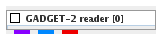
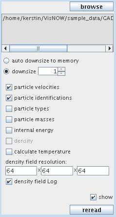
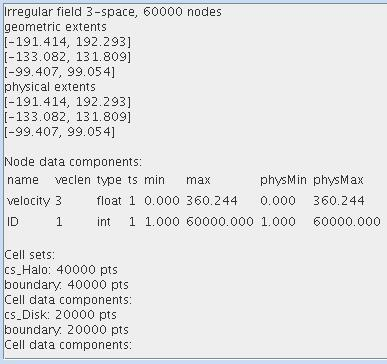

|
|
|

Reads Gadget-2 cosmological simulation data files.
| input port | type | description | data acceptors |
|---|---|---|---|
| output port | type | description | data schemas |
| outField | VNIrregularField | Irregular Field 3-space |
|
| outDensityField | VNRegularField | Regular Field 3D 3-space with affine geometry scalar component |
|
| outObj | VNGeometryObject |
GADGET-2 READER
The module reads Gadget-2 cosmological simulation data files.
Output data
At output there is a regular 3-space field, a regular 3D 3-space field with affine geometry and at least on scalar component and a geometry object.
Computation parameters

To select an input file click the browse button and select a file in the file browser or type the file name into the text input field below the button.
The user can choose between automatic and manual downsize using auto downsize to memory radio check box or downsize radio check box.
Using the component check box the user defines the components which have to be read in. After parameter change the input file has to be reread.
The density field resolution text fields define the resolution of the generated density field. If density field Log is on density is given in logarithmic scale.
Switch the show check box on in order to visualize results. If more than one component is choosen only the first one is visualized.
By default the check box is off.
In order to reread the same input file select the reread button.
After reading in data from the input file there appears some basic information about the data:

Presentation parameters
Presentation tab contents are described in the common interfaces section unter the Presentation Panel entry.